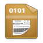

CONFISCATI BENE!
I risultati dell'hackaton #SOD14 sui beni confiscati alle mafie, a partire dal scraping del sito dell'Agenzia Nazionale per i beni confiscati.
scroll down
- MANIFESTO -
La disponibilità di informazioni semplici, dirette e ricche sui beni confiscati alle mafie permette alle imprese sane e alla società civile di costruire su di essi progetti di impresa sostenibile e di creazione di valore sociale. Ciascun bene confiscato ma non riassegnato imprigiona in sé energia potenziale che dovrebbe invece essere liberata sul territorio.
I dati pubblicati sul sito dell'Agenzia nazionale per l'amministrazione e la destinazione dei beni sequestrati e confiscati alla criminalità organizzata non sono completi, primari, tempestivi e riutilizzabili. Li abbiamo estratti, resi disponibili come open data e usati per consentire a tutti di esplorarli in modo intuitivo, anche attraverso visualizzazioni. Consideratelo un regalo di Spaghetti Open Data e OpenPompei, un segno di apprezzamento per il lavoro prezioso fatto dall'ANBSC e dalle tante imprese e associazioni che lavorano sui beni confiscati in tutta Italia.
Noi siamo arrivati fino a qui, ma moltissimo si può ancora fare. Per proseguire insieme, chiediamo all'ANSBC di aprire questi dati in modo che possano essere Confiscati bene.
- I DATI -
- LE CHOROPLETHS -
REGIONI
PROVINCE
COMUNI
- I DATASET -
Beni immobili in CSV

È il dataset principale del progetto, frutto dell'estrazione dei dati a partire dalla tabelle pubblicate sul sito dell'Agenzia nazionale per l'amministrazione e la destinazione dei beni sequestrati e confiscati alla criminalità organizzata.
Beni immobili in Data Package
Il Data Package è un insieme di specifiche creato da OKFN per rendere la pubblicazione di dati semplice, web friendly, standardizzata ed estendibile. Qui l'accesso al dataset tramite un viewer dedicato.
Beni immobili in JSON
Il file CSV dei beni è stato convertito anche in JSON utilizzando l'utility csvkit.
Quotazioni immobiliari in CSV
Questo dataset deriva dallo scraping del file dell'Agenzia dell'entrate denominato "Allegato 2 - Territorialità del livello delle quotazioni immobiliari". Sono stati estratti i valori relativi ai Comuni.
Quotazioni immobiliari in Data Package
Anche questo dataset è reso disponibile secondo specifiche Data Package. Qui l'accesso al dataset tramite un viewer dedicato.
Quotazioni immobiliari in JSON
Il file CSV delle quotazioni immobiliari è stato convertito anche in JSON sempre utilizzando l'utility csvkit.

- HELLO! -
Questi sono solo alcuni dei titoli che nelle ultime settimane hanno popolato i nostri quotidiani e che testimoniano non solo la quotidiana battaglia della macchina dello Stato nel portare via terreno, sembra proprio il caso di dirlo, alla criminalità organizzata, ma soprattutto l'importanza di procedure efficaci affinché i beni una volta confiscati diventino una risorsa per la collettività. Nel 2010 per gestire questi flussi di confische via via crescenti è nata l'Agenzia Nazionale per l'amministrazione e la destinazione dei beni Sequestrati e Confiscati alla criminalità organizzata (ANBSC), sotto la vigilanza del Ministero dell'Interno, che si è occupata negli anni, circondata da associazioni come Libera, di raccogliere e organizzare i dati relativi a questi flussi. Da un anno e mezzo a questa parte però i dati sulle confische sembrano non essere più disponibili sul sito dell'Agenzia, il che porta con sé conseguenze notevoli nel lavoro di chi come Libera si occupa tra le altre cose di promuovere il riuso di questi territori. Questo è il grido lanciato da Don Luigi Ciotti e Rosy Bindi, rispettivamente presidente di Libera e presidente della commissione antimafia, in una video intervista del 29 marzo scorso apparsa su Il Fatto Quotidiano. È importante – afferma nella stessa occasione Rosy Bindi – che si crei una rete di interlocutori di cui l'Agenzia tenga le fila. Solo in questo modo sarà possibile in tempi breve mettere a punto, attraverso i dovuti provvedimenti, un sistema di gestione rapida ed efficace di questi beni.
Per fare ciò è indispensabile che, affinché ne venga liberata la grande energia potenziale, i dati sui beni confiscati vengano pubblicati completi e soprattutto in Open Data. Che siano cioè accessibili in modo più semplice, più diretto e più ricco. Per questa ragione è nato Confiscati Bene, il risultato di un gruppo di lavoro durante il raduno bolognese dello scorso marzo di Spaghetti Open Data (#SOD14), una comunità di cittadini italiani interessati al rilascio di dati pubblici in formato aperto, in modo da renderne facile l'accesso e il riuso, di cui fanno parte hacker civici, informatici, giornalisti, dipendenti delle pubbliche amministrazioni e semplici “smanettoni”. Non siamo certamente l'unico gruppo di cittadini interessati a questi dati, basti pensare al lavoro che stanno facendo i cittadini di Monithon, la Maratona di monitoraggio civico delle politiche pubbliche in Italia basata sui dati di Open Coesione, sul riuso dei beni confiscati alle mafie. Oppure alla convezione firmata lo scorso 4 aprile tra l'Università di Palermo, l'Università Cattolica Sacro Cuore di Milano, la Commissione parlamentare Antimafia e la Procura Nazionale Antimafia, per promuovere una mappatura aggiornata delle forme di infiltrazione della criminalità organizzata all'interno dei meccanismi della legalità.
Ma che cosa è stato fatto dunque a #SOD14? Partendo dai dati che erano presenti sul sito dell'Agenzia, li abbiamo estratti, resi disponibili per il riuso e costruito una demo sull'utilizzo che se ne potrebbe fare in termini di visualizzazione e analisi. Quello che presentiamo qui è dunque un primo risultato: una mappa dei beni confiscati per regione, provincia e comune a seconda del tipo di bene (abitazione, terreno, locale, fabbricato), un esempio di come sfruttare al massimo le potenzialità dei dati all'interno di un contesto di interesse sociale qual è la situazione dei beni confiscati alla criminalità organizzata. Nel fare questo, ancora una volta, è di fondamentale importanza che i dati siano completi, facili da fruire e soprattutto aperti. Per concludere, quindi, la nostra richiesta nei confronti dell'Agenzia è anzitutto di APRIRE I DATI, in modo che i beni confiscati diventino sempre più rapidamente Confiscati Bene. Perché, come scriveva ormai dieci anni fa la giornalista francese Marcelle Padovani nell'introduzione al libro Cose di Cosa Nostra, “Se […] l'amministrazione dei beni confiscati ai mafiosi dovesse rimanere farraginosa e irta di ostacoli così com'è oggi, rendendo improbabile l'uso pubblico di quei beni per la collettività, sarebbero ancora le mafie a giovarsene.”
di Cristina Da Rold